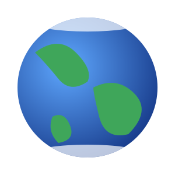
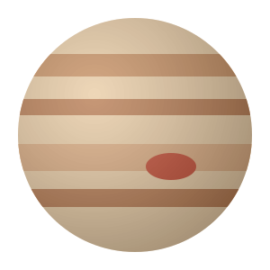

Terra
O único planeta conhecido com vida. Cerca de 71% da superfície está coberta por água.
Saber mais na NASA ↗Quatro planetas em destaque
Dois planetas rochosos e dois gigantes gasosos. Repara como as diferenças de tamanho são enormes!

O único planeta conhecido com vida. Cerca de 71% da superfície está coberta por água.
Saber mais na NASA ↗
O planeta vermelho. Tem o maior vulcão do Sistema Solar: o Olympus Mons.
Ver página de Marte →

Famoso pelos anéis, feitos de gelo e rocha. É tão pouco denso que flutuaria em água.
Saber mais na NASA ↗